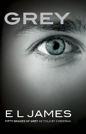

Dernières lectures
Ces dernières semaines, j’ai lu 4 romans que je préfère réunir en un seul article, car je ne sais pas trop quoi en dire. Des idées de lectures pour les uns, des livres à éviter pour d’autres, mon avis, aussi court soit-il, vous donnera peut-être une idée de comment réagir face à ces bouquins.
Nuit noire - Collection Vallée fantôme de Lynn Beach
Ce court roman pour enfants se baladait dans ma bibliothèque, mais je ne l’avais encore jamais ouvert.
L’histoire
Arthur est un jeune garçon non-voyant. Ses parents sont sur protecteurs, mais ils acceptent de le laisser intégrer le même collège que sa meilleure amie, à condition qu’il y aille avec son chien. Arthur part donc avec Lord, son chien-guide, dans le collège de ses rêves, en montagne. Son amie lui fait visiter les alentours et ils découvrent une grotte étrange. Il leur suffit de toucher la pierre qui en condamne l’accès pour réveiller un esprit vengeur. Arthur ne peut plus compter que sur son chien pour le protéger, jour et nuit, de cette entité effrayante bien décidée à le tuer.
Mon avis
L’histoire se lit assez facilement et l’intrigue est intéressante. Cela reste néanmoins destiné à un très jeune public. Je suis vite arrivée à la fin en me lassant parfois des interventions de l’esprit maléfique, toujours similaires. Le fait que le personnage principal soit aveugle n’apporte rien de particulier à l’histoire. Je trouve que l’on ne perçoit pas suffisamment ses sentiments vis à vis de son handicap et ses difficultés. Arthur se veut indépendant et cela le rend plus ingrat que sympathique. C’est dommage. Je conseille néanmoins cette lecture aux enfants de 8 à 12 ans qui aiment lire et se faire peur. C’est un bon début.
Grey - Cinquante nuances de Grey par Christian de E.L. James
L’histoire
Anastasia Steele, jeune étudiante en lettres, rend service à son amie et colocataire en allant interviewer un riche chef d’entreprise à sa place, pour le journal de la fac. Elle rencontre alors Christian Grey et la tension devient vite électrique entre eux.
Cette rencontre, largement connue de part la première trilogie de E.L. James et le film adapté du premier roman, est cette fois racontée par Christian Grey lui-même. Le lecteur apprend la passion de Grey et son intention vis à vis d’Ana tout en ayant de vagues allusions au passé torturé du personnage principal. Le jeune homme est un maniaque du contrôle, il veut absolument tout dominer, dans tous les domaines. Il se voit bien exercer son talent sur la jeune mademoiselle Steele qui est tout à fait son genre de femme. Il lui propose alors de signer un contrat de soumission afin qu’il puisse disposer d’elle sexuellement. Il veut la punir, la fouetter, la suspendre au plafond, etc… Bref, il donne dans le SM. Ana est jeune, vierge et vite amoureuse de lui (on ne comprend pas toujours pourquoi, mais bon, chacun son truc…). Elle n’accepte pas de signer le contrat tout de suite, mais une relation commence entre eux et cela déstabilise Christian qui perd complètement le contrôle de sa vie.
Mon avis
L’histoire étant déjà connue, j’aurais aimé en apprendre davantage sur Christian. C’est le cas, bien sûr, mais ce n’est pas encore suffisant. La psychologie du personnage est trop survolée à mon goût alors que c’était finalement le seul intérêt de cette réécriture.
Si vous avez aimé la première trilogie de E.L. James sur ce couple atypique, pourquoi pas… Sinon, ce roman ne vous apportera rien de plus. Si l’auteure a l’intention de réécrire de la même manière les deux suivants (en prenant le point de vue de Christian), ils ne seront pas sur ma liste de lectures prioritaires. Je n’exclue pas de les découvrir non plus. On verra.
Les menteuses - tome 1 - Confidences de Sara Shepard
Ce roman, premier d’une longue série, est la base de la série télévisée Pretty Little Liars. Je regarde la série depuis son commencement et, arrivée presque à terme, je me suis dit que ce serait peut-être intéressant de redécouvrir des éléments que j’avais pu oublier avant le dénouement final. J’ai pensé que les livres seraient un bon rafraîchissement de mémoire. Je ne me suis jamais autant trompée !
L’histoire
La jeune fille la plus populaire du collège, Alison, disparaît mystérieusement durant l’été. Ses amies sont bouleversées et finissent par se séparer. Quelques années plus tard, Hanna, Aria, Spencer et Emily se retrouvent toutes réunies au lycée et le corps de leur amie disparue est retrouvé dans le jardin de son ancienne maison. Il n’en faut pas plus pour rapprocher les quatre amies qui assistent à l’enterrement avec tristesse. Pourtant, elles ressentent toutes une sorte de soulagement à l’idée qu’Alison, assez peste sur les bords, ne soit plus là pour révéler leurs petits secrets à tout le monde. Elles reçoivent alors d’étranges messages, de plus en plus inquiétants, suggérant que leur défunte amie n’est peut-être pas si morte que cela !
Mon avis
Je ne peux m’empêcher de comparer la série au roman et forcément, je suis déçue. Les personnages sont complètement différents et c’est assez déstabilisant. S’il n’y avait que cela, je pourrais lire tous les romans sans problème, même si la série TV a pris quelques libertés d’adaptations, mais il y a aussi le style d’écriture. Alors NON. Non, je ne poursuivrai pas cette série de romans. Rien à faire !
D’accord, les personnages principaux sont cinq adolescentes, ce ne sont pas des génies et elles s’inquiètent plus de leur popularité et de leurs petits amis que du reste, mais bon sang, le narrateur est externe (et omniscient quand cela l’arrange) ! Nous ne suivons l’histoire dans la tête d’aucune des filles en particulier, même si nous avons accès à leurs ressentis. Alors l’écriture devrait être plus soignée, moins proche d’un parler commun et surtout, moins chargée de publicités !
Je déteste lire toutes les deux lignes la marque de rouge à lèvre, de sac à main ou de robe des personnages. Ce n’est pas intéressant ! Et c’est déplacé pour des lecteurs qui ne sont pas américains et ne connaissent pas forcément toutes les marques citées !
Pour ce qui est du vocabulaire léger et du style maladroit, je ne peux pas en vouloir à l’auteure, l’impression est peut-être due à la traduction (je l’ai lu en français), mais cette manie détestable de décrire les affaires des filles en donnant à chaque fois leur marque me déplaît assez pour me faire abandonner la lecture. Je ne vous conseille pas ces romans. Si vous voulez connaître le fin mot de l’histoire d’Alison DiLaurentis et de ses copines, regardez Pretty Little Liars (et encore, la soit-disant grande conclusion de l’histoire qui arrive au milieu de la saison 6 est, à mes yeux, une blague amère à digérer, mais ce n’est que mon point de vue ^^).